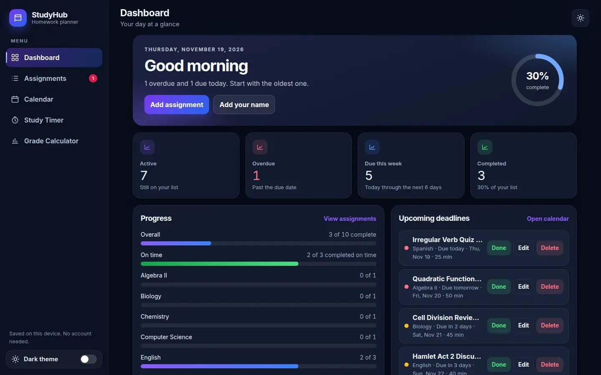
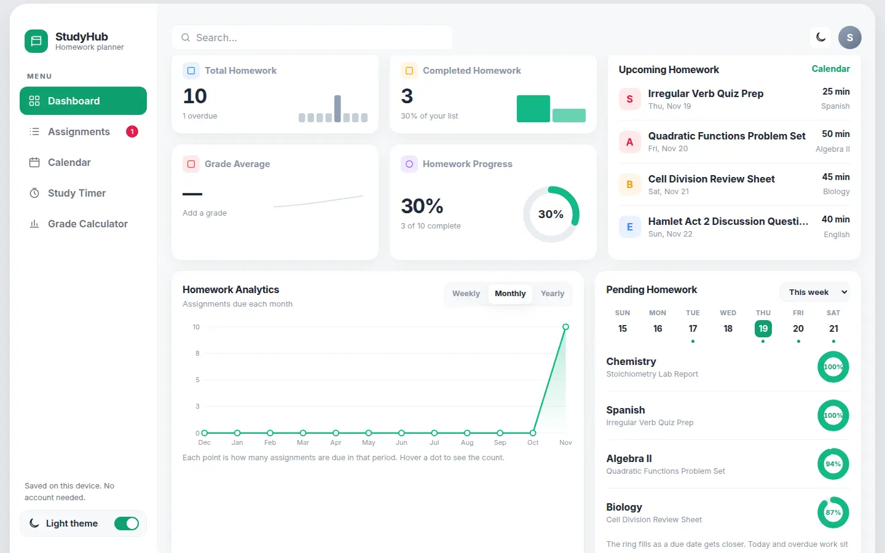
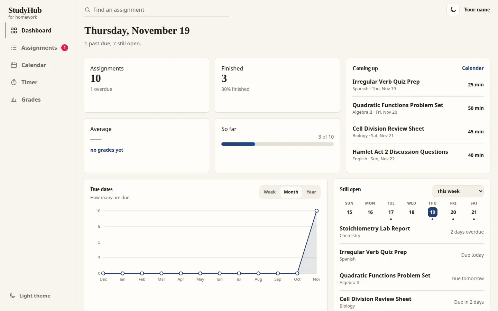
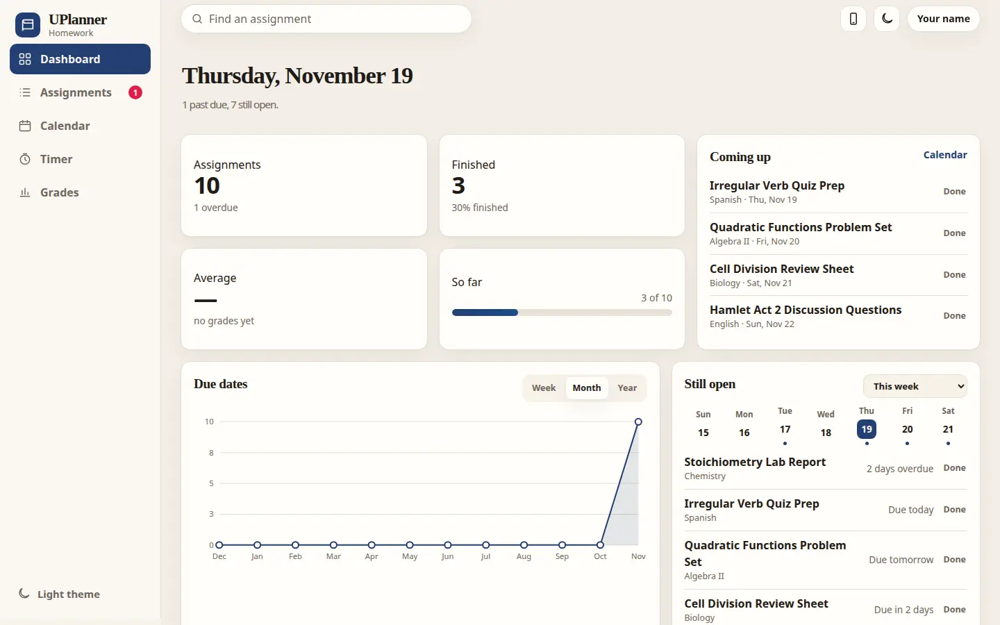

Hash routing
The URL picks the page. #calendar shows the calendar.
addEventListener("hashchange", route);Brady Grislis · Advanced Coding
A homework planner that lives in your browser.
scroll or press →
Serving size 1 browser tab
Saved with localStorage. Runs anywhere a browser runs.
just
HTML, CSS, and JavaScript.
index.html · styles.css · app.js
six tricks that make it work →
The URL picks the page. #calendar shows the calendar.
addEventListener("hashchange", route);Every edit writes the whole list to localStorage.
localStorage.setItem(key, JSON.stringify(list));The due-date chart is an SVG path built from numbers.
(i ? "L" : "M") + x + " " + yIt counts down to an end time, so a slow tab never drifts.
remaining = endTime - Date.now();The chime is two sine waves made with Web Audio.
osc.type = "sine";
osc.frequency.value = 880;Container queries let the real phone layout run inside a frame.
@container planner (max-width: 800px)



// save it
localStorage.setItem("note", "Bio quiz Friday");
// get it back, even after a reload
localStorage.getItem("note");
// lists need to become text first
localStorage.setItem("hw", JSON.stringify(list));
JSON.parse(localStorage.getItem("hw"));Try it on your phone
1 / 9 · UPlanner